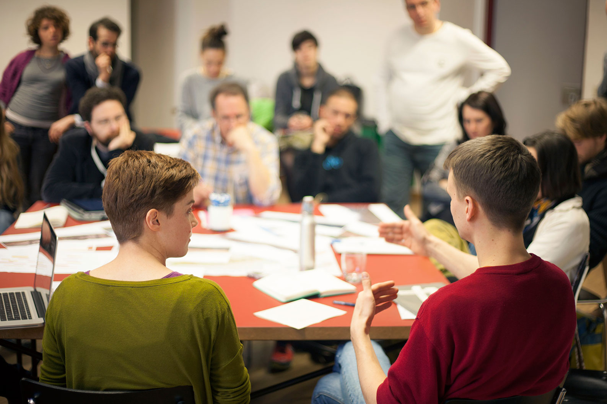
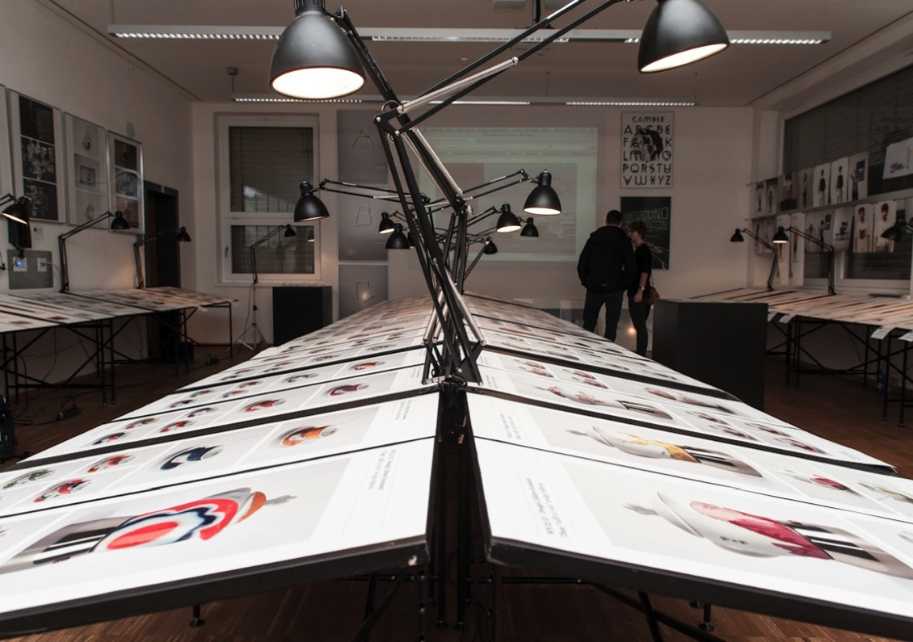
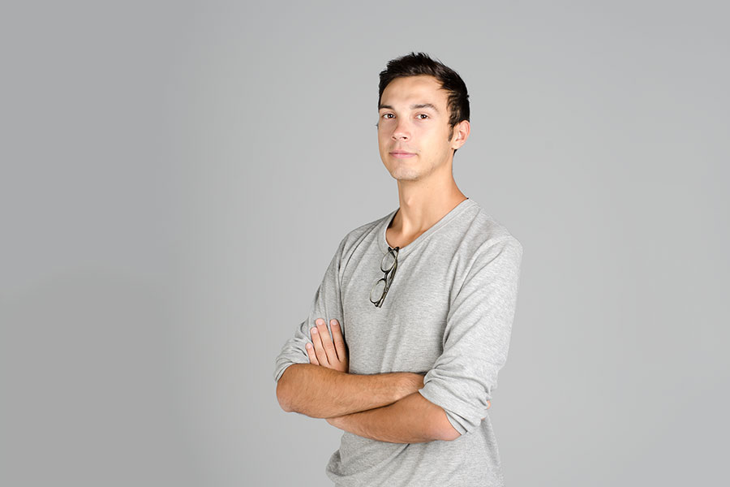

Dieser dreisprachige Bachelor kombiniert Produkt- und Grafikdesign. Studierende erarbeiten in kleinen Gruppen ihre individuellen Projekte und erlernen gleichzeitig das nötige Instrumentarium zu deren Realisierung.
Um den Studierenden eine möglichst intensive Auseinandersetzung mit der beruflichen Realität von Designern zu ermöglichen, sind projektorientiertes Lernen und enge Verknüpfung von Theorie und Praxis ein essentieller Bestandteil unseres Studienmodells.
Durch die Bearbeitung von komplexen Thematiken erlernen die Studierenden ihre Kreativität in innovative Konzepte und Entwürfe zu übersetzen, zu experimentieren und eigenständig Interessenschwerpunkte zu setzen.
Großzügige Projekträume, die Ateliers, und Werkstätten mit High-Tech-Ausstattung bieten alle Voraussetzungen für die erfolgreiche Realisierung von Entwürfen. Studierende können an mehr als 20 Partneruniversitäten - wie z.B. Istanbul, Jerusalem oder Eindhoven - wertvolle Auslandserfahrung sammeln.
Absolventen können ihre Fähigkeiten sowohl im Bereich des Produktdesigns als auch im Bereich der Grafik und visuellen Kommunikation in Agenturen oder auch als Freiberufler einsetzen.
Philip Santa arbeitet bei Interel in Dubai und gestaltet Intercom-Systeme für große Hotelketten.
Im Laufe der 3 Jahre arbeiten die Studierenden jedes Semester an einem anderen Projekt. Das erste Semester besteht aus einem sogenannten Warm-up-Projekt (WUP). In den darauffolgenden Semestern kann zwischen einer Reihe von Projekten gewählt werden, wobei insgesamt 2 Grafik- und 2 Produktdesign-Projekte belegt werden müssen. Im letzten Semester arbeiten Studierende an ihrem Abschlussprojekt.
Die typische Woche eines Design-Studierenden besteht aus den Projektkursen, die montags dienstags und mittwochs stattfinden. Am Donnerstag und am Freitag finden die Fach- und Theoriekurse, wie beispielsweise Kunstgeschichte oder Typographie statt.
Voraussetzung für die Zulassung ist der Nachweis von Niveau B2 in zwei der drei Unterrichtssprachen (Italienisch, Deutsch, Englisch).